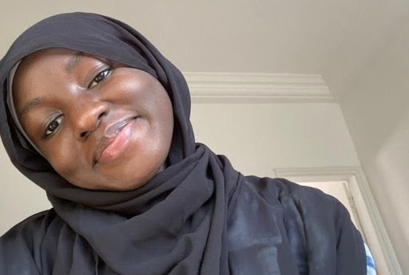

Meet the Team
John Muli Ndulu
Developer
I am particularly driven by the desire to harness the potential of technology to enhance the lives of my compatriots. With each passing day, new opportunities arise to address critical challenges, bridge gaps in access to essential services, and uplift communities through transformative solutions. In our project, I was part of the front end development team, and worked on the about us page, together with appendix 3 and references pages, in our group report, to ensure a responsive website that meets the expectations of our target audience.

Ameerat Ademuyiwa
Designer
As a dedicated student with a strong interest in Data analysis, I am enthusiastic about creating data-driven solutions. Through the project, I worked within the design team to create the visual identity and branding of the website and develop the website's information architecture and navigation to ensure a user-friendly experience. Furthermore, I also provided assistance to other teams when required.

John Mbuthia Kamau
Designer
I am passionate about the revolutionary power of AI and emerging trends in this field. As a computing major, I plan to focus on front end development and design. I am particularly interested in graphic design and user experience and was part of the team focusing on these aspects of our project. Additionally, I have an interest in Human Computer interaction and worked on that section of the group Report.
Adja Nene Gueye
Designer
My name is Adja Gueye, a computing student at ALC. My passion lies in the domains of cybersecurity and cloud computing. In our project, I played the role of a UI/UX designer, ensuring an intuitive and user-friendly interface. My contributions also extended to drafting a section of the group report and assisting my teammates in need.
Arasen Parmanum
Developer
Fervent technology and AI enthusiast, I am driven by an unwavering commitment to revolutionize education through cutting-edge innovation. My passion lies in creating a dynamic and all-encompassing learning ecosystem, catering to diverse learners, including those in non-traditional settings. Through the fusion of technology and creativity, I aspire to empower individuals with the tools to thrive in an ever-evolving world.
Augusta Tiam
Developer
With a deep passion for STEM, my mission is to utilize technology as a catalyst for enhancing the educational system in Cameroon. In pursuit of this goal, I actively collaborated on both the front and back end of the website, leveraging my skills and expertise to create a seamless user experience and optimize the functionality of the platform